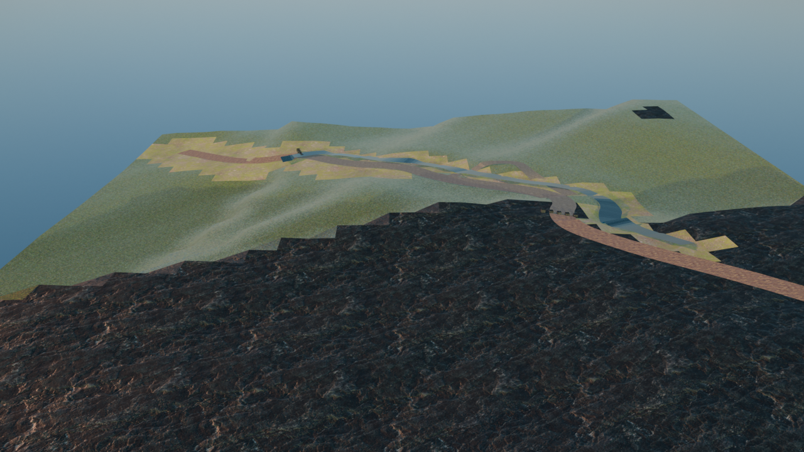
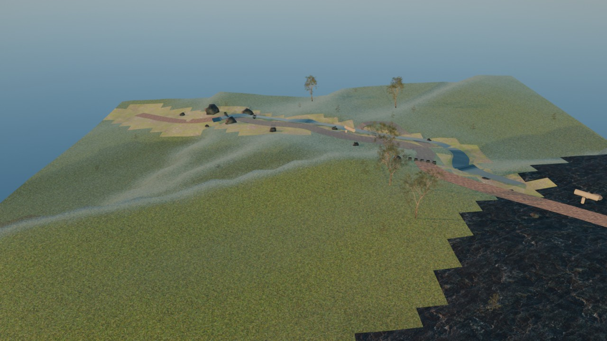
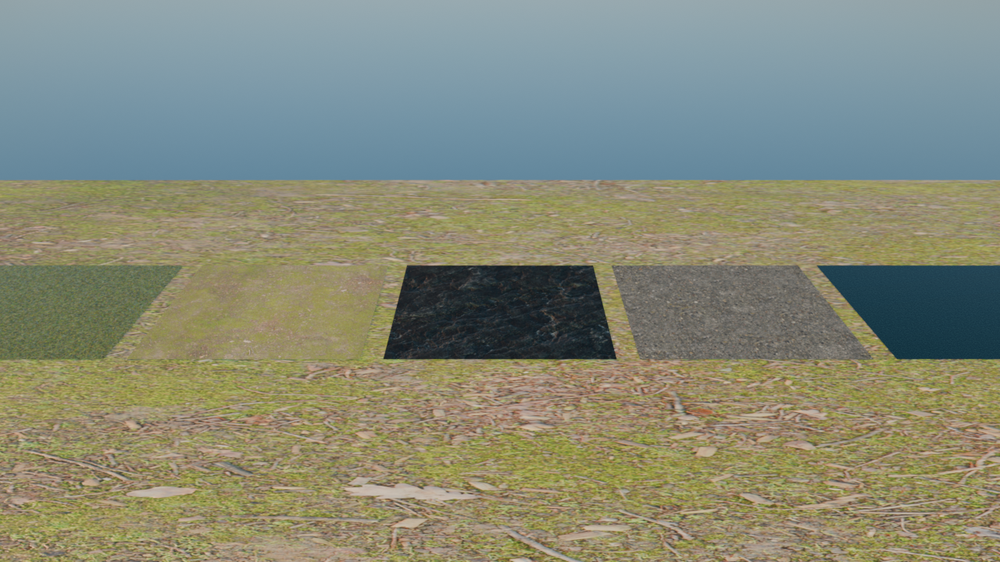

11 stops（起点→終点）
| stop | 名称 | 主素材 |
|---|---|---|
| s0 | 入口ゲート | 石畳 |
| s1 | 森の入口 | 芝＋土 |
| s2 | 大岩スポット | 岩4K |
| s3 | 小川沿い | 湿地土＋水面 |
| s4 | 分岐点 | 土道 |
| s5 | 林間の広場 | 芝＋丸太休憩物 |
| s6 | 草原の開け | 芝 |
| s7 | 針葉樹の木立ち | 写実松（密植） |
| s8 | 古道の石畳 | 石畳 |
| s9 | 夕景テラス | 土道＋石＋夕景 |
| s10 | 終点・展望台 | 岩＋草原 |
使用素材（全てCC0）
| 素材 | 配布元 |
|---|---|
| Grass004／Grass005（芝4K） | ambientCG |
| Ground037／Ground106（土4K） | ambientCG |
| Rock030／Rock035（岩4K） | ambientCG |
| Gravel043（土道4K） | ambientCG |
| PavingStones152（石畳4K） | ambientCG |
| 松・針葉樹・広葉樹（3種） | Poly Haven |
| 夕景HDRI quarry_01_puresky | Poly Haven |